即将离开苏州了，momo酱说她还没去过苏州玩，恰好我也还没去过虎丘，于是就在离开前去玩下，初入虎丘大门，天气太热，先买把扇子。
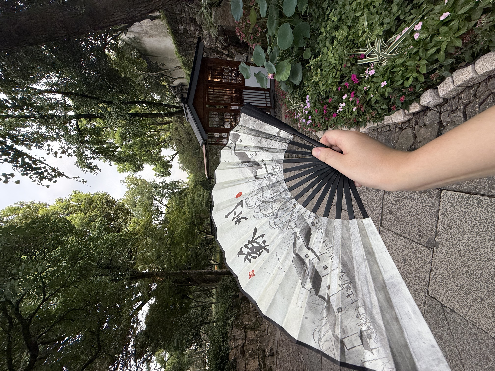
先路过了一口泉眼，上书憨憨泉，憨憨尊者。。
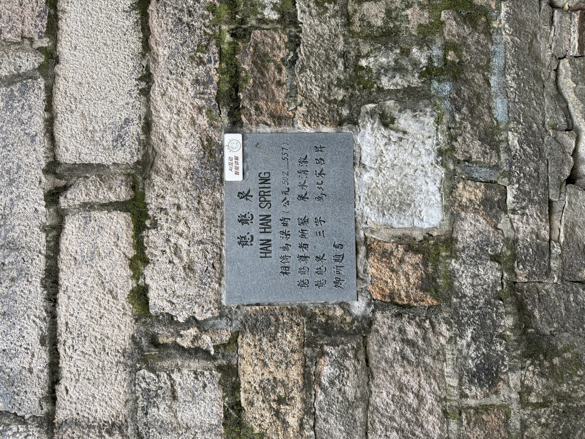
虎丘剑池。
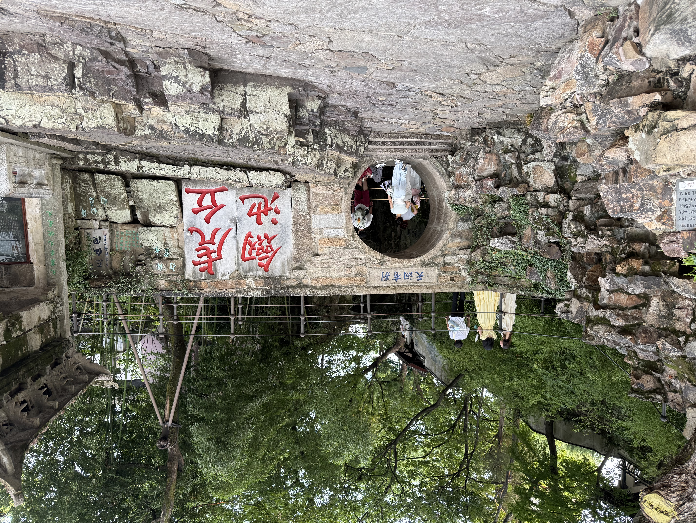
去虎丘塔的路上，一些治愈的林木。
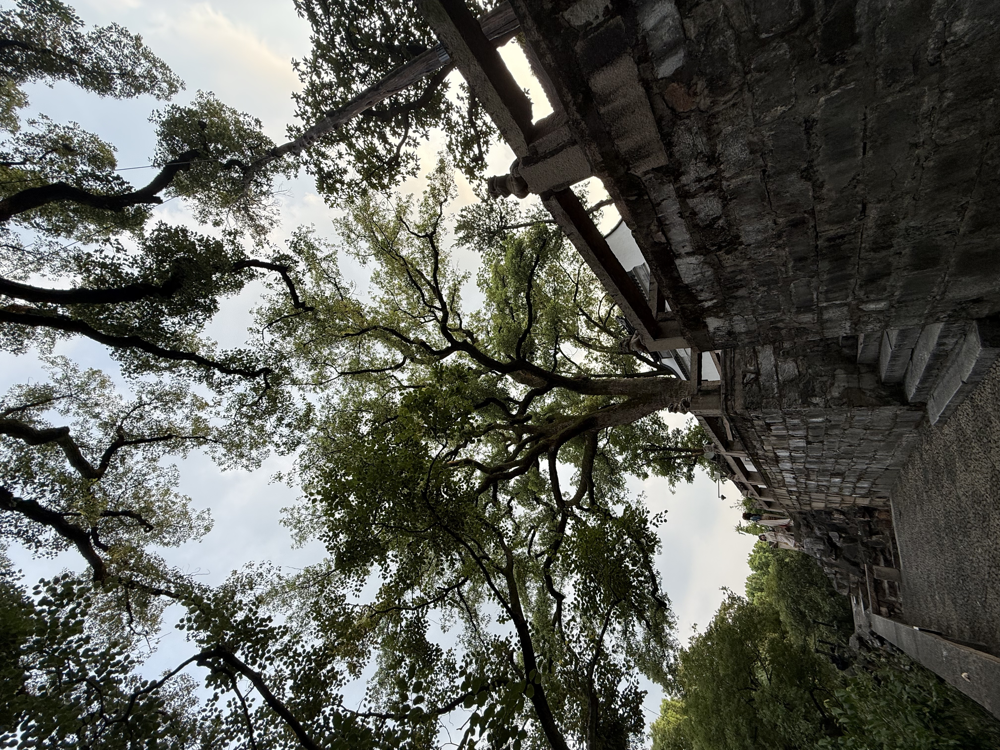
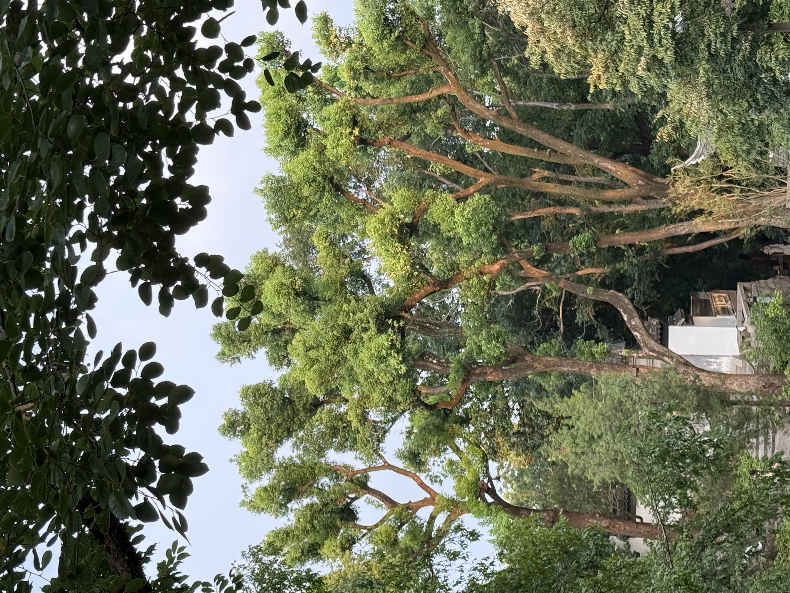
虎丘塔。
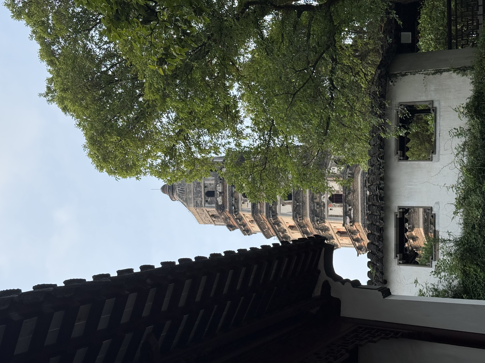
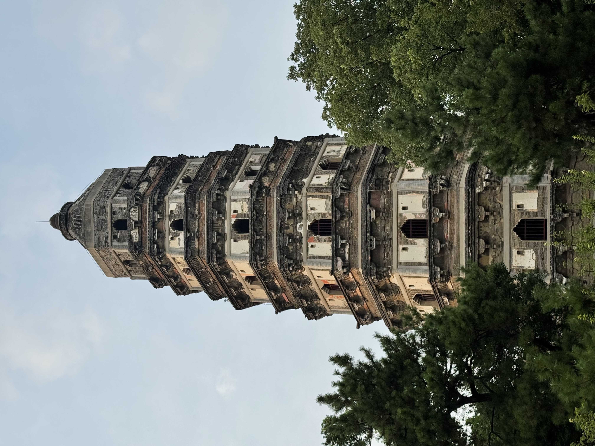
虎丘塔旁边的一处小院风景。
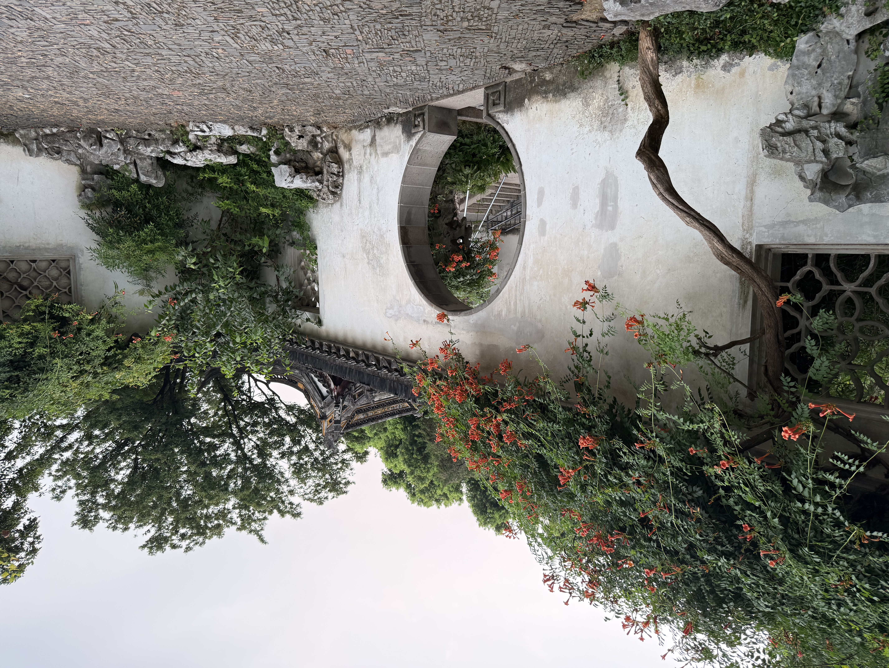
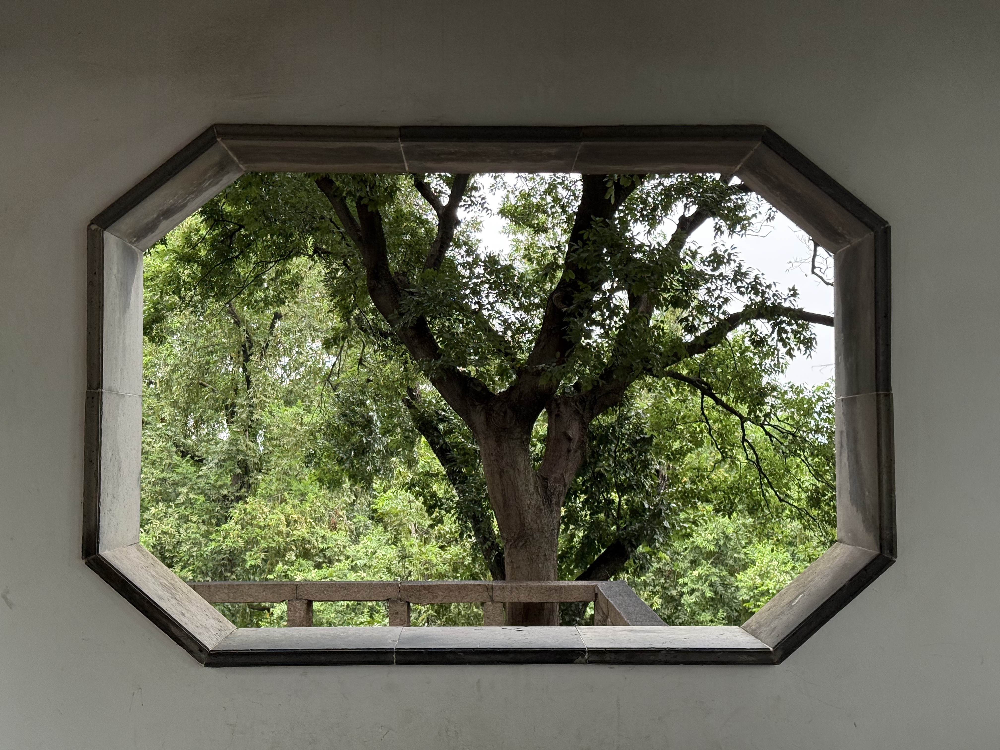
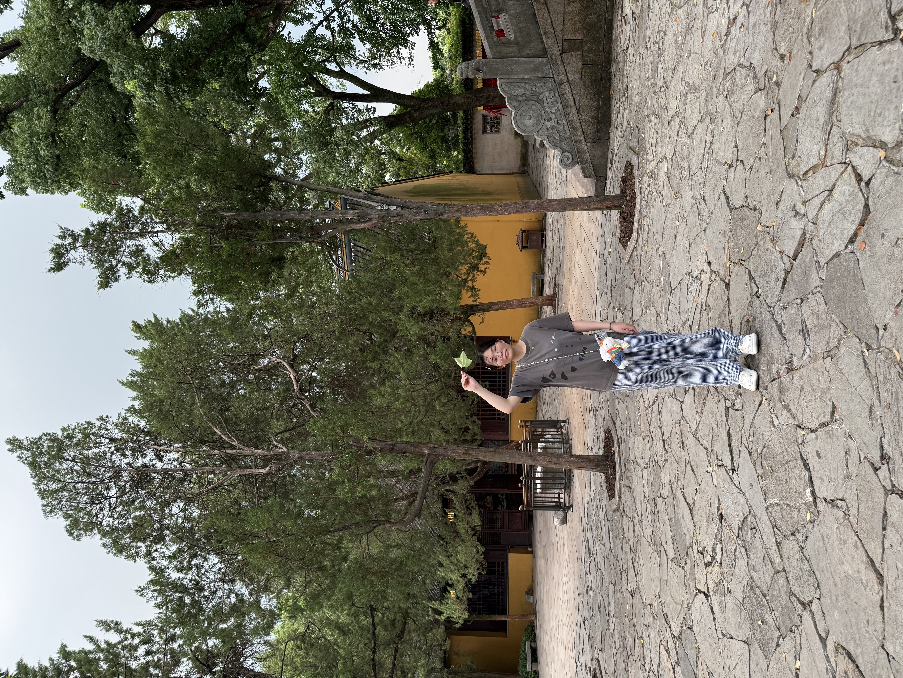
天快黑了，貌似要下雷阵雨了，去虎丘塔下的小院避雨，看看文物介绍。
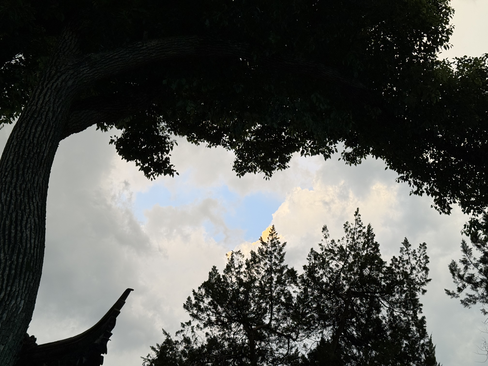
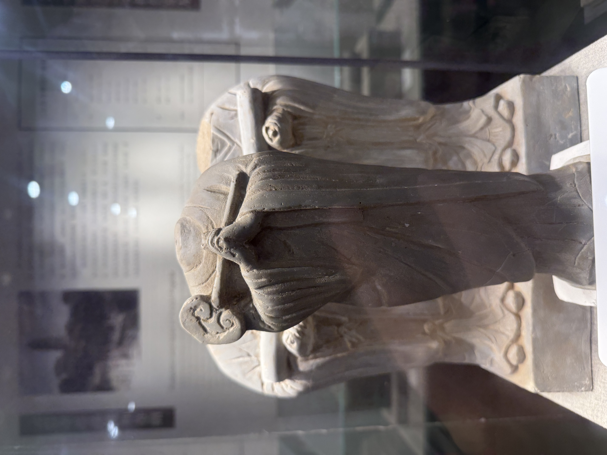
有一处景观名为“小武当”，竹林密布，地势低洼，天将下雨，momo酱要去看看，于是被大雨困在了竹林中，下了20分钟终于停了，期间找了景区应急电话准备呼救，最终未拨出。。还是蛮危险的，后面要注意安全。。
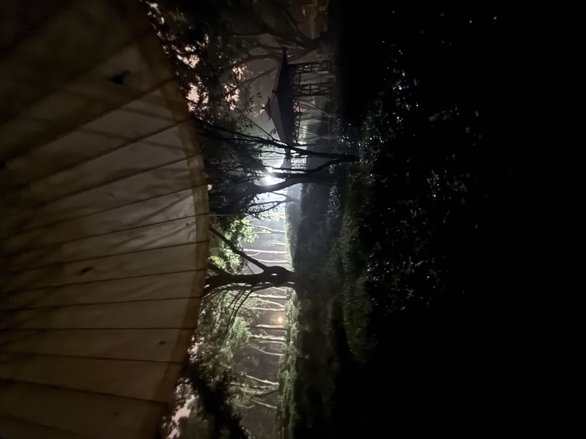